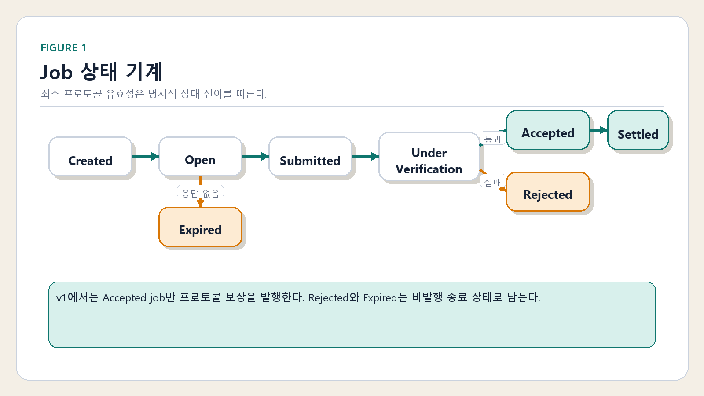
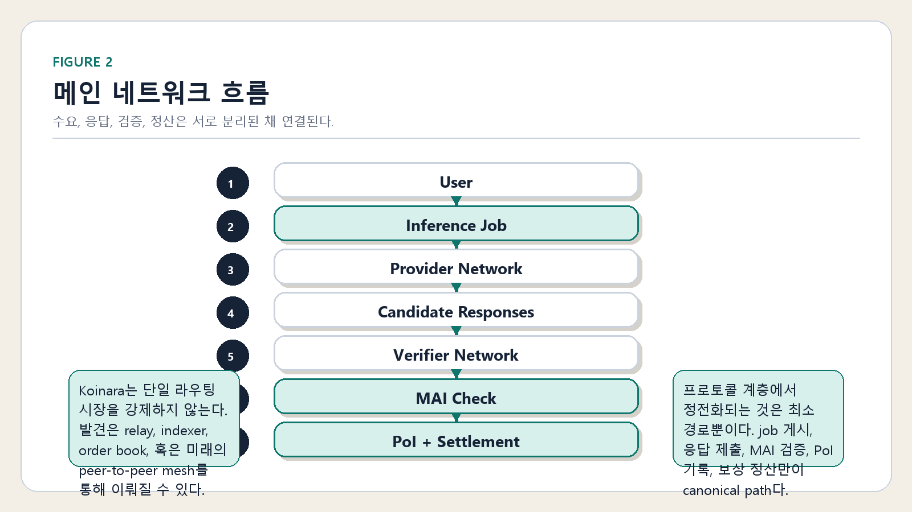
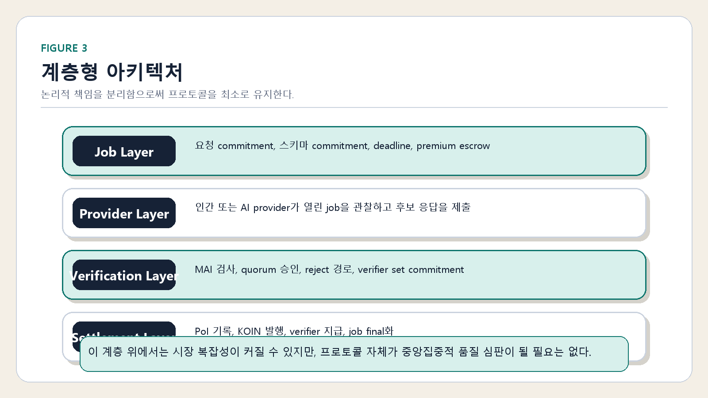
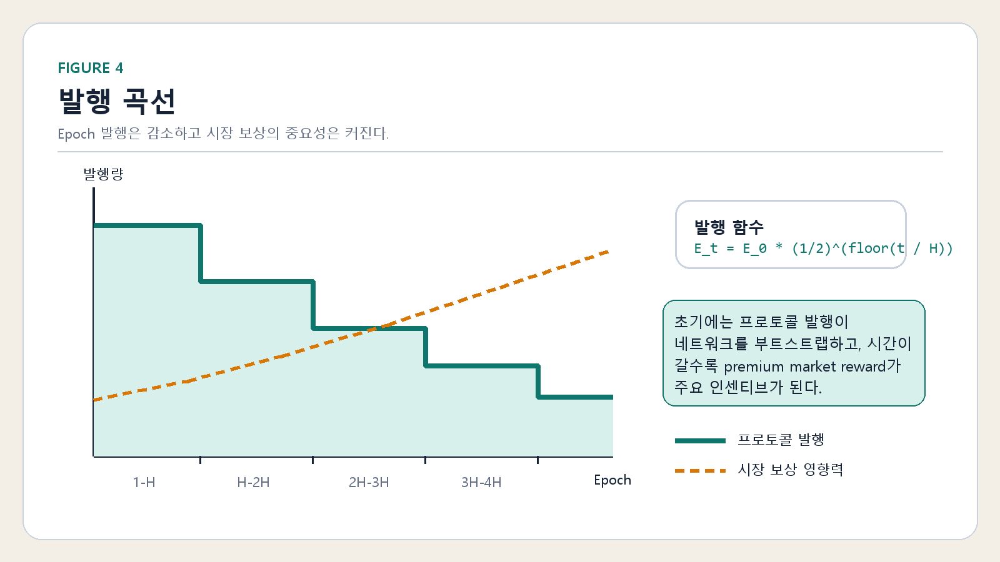

최소 허용 추론
MAI는 최적 답변 오라클이 아닙니다. 유효한 작업 상태, 마감 준수, 비어있지 않은 응답, 형식 통과, 검증자 승인으로 정의되는 프로토콜 수락의 최소 기준선입니다.
최소 프로토콜 / 개방형 추론 시장
인간/AI 에이전트/컴퓨터 모두가 참여할 수 있는 네트워크이며,
누구나 노드에 연결하여 최소한의 추론을 제공하고 최소한의 보상을 얻을 수
있습니다.
비트코인이 암호화폐의 길을 열었다면, Koinara는 추론의 집단지성화의 길을
열고자 합니다.
선채굴, 재단 등 통제하는 수단은 아무도 없습니다.
비트코인처럼 P2P로 연결되며, 참여하는 모두가 주인이 되고 발전시켜 나갈
수 있습니다.
이 길을 어떻게 사용할 것인지는 참여자 여러분의 몫입니다.
프로토콜 플로어
MAI는 최적 답변 오라클이 아닙니다. 유효한 작업 상태, 마감 준수, 비어있지 않은 응답, 형식 통과, 검증자 승인으로 정의되는 프로토콜 수락의 최소 기준선입니다.
KOIN 발행은 프로토콜 플로어에서 승인된 추론에 보상합니다. 프리미엄 보상은 시장 자금으로 유지되며 프로토콜 발행과 분리되어야 합니다.
PoI는 제출물이 최소 프로토콜 조건을 충족했음을 증명합니다. 보편적 진리나 시장 최고 품질을 증명하지 않습니다.
퍼블릭 노드
Koinara-node는 네트워크를 위한 독립형 공개 백그라운드 노드입니다. 호스팅된 API, 비즈니스 레이어, UI 종속성 없이 지원되는 네트워크에 배포된 Koinara 컨트랙트에 직접 연결합니다.
$ git clone https://github.com/sinmb79/Koinara-node.git
$ cd Koinara-node
$ npm install
$ npm run setup
$ npm run doctor
$ npm run node
세 단계 운영자 경로 — 클론, 설정, 실행.
지원 네트워크
v1의 기본 참조 배포 경로이자 롤아웃 계획의 첫 번째 체인입니다.
건강 기반 참여 전환이 가능한 독립적 EVM 배포 대상으로 노드 런타임에 준비되어 있습니다.
동일한 EVM 런타임 경로로 지원되어 노드 동작 변경 없이 프로토콜 인스턴스를 확장할 수 있습니다.
공유 EVM 어댑터를 통해 준비되어 동일한 제공자 및 검증자 루프가 배포 후 실행 가능합니다.
구성 및 어댑터 경계가 마련되어 있지만, 실행 가능한 Solana 배포 및 런타임은 향후 작업입니다.
렌더링된 도표




다음 트랙
Worldland는 v1 컨트랙트의 첫 번째 참조 배포 경로로 유지되며, 체인별 런북과 배포 아티팩트는 프로토콜 저장소 외부에 보관됩니다.
Koinara-WorldlandWorldland 경로가 안정화된 후, Base, Ethereum, BNB는 최소 프로토콜 표면을 변경하지 않고 독립적인 Koinara 배포를 호스팅할 수 있습니다.
Solana 및 향후 non-EVM 트랙은 현재 Solidity 배포 모델을 경계 너머로 확장하지 않고 명시적 체인 어댑터 뒤에 배치해야 합니다.
최소 프로토콜을 체인 독립적으로 유지하고 가용성을 브리지 로직으로 전환하지 않습니다.
하나의 체인이 다른 체인을 조용히 흡수할 수 있는 척하지 말고 별도의 체인 배포를 게시합니다.